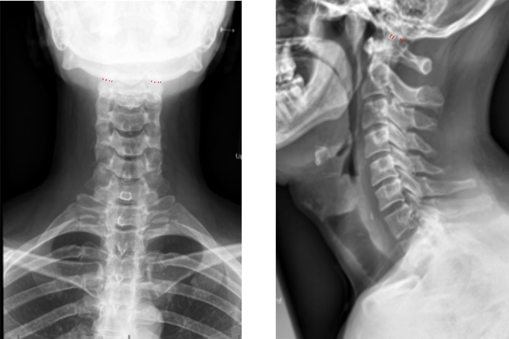
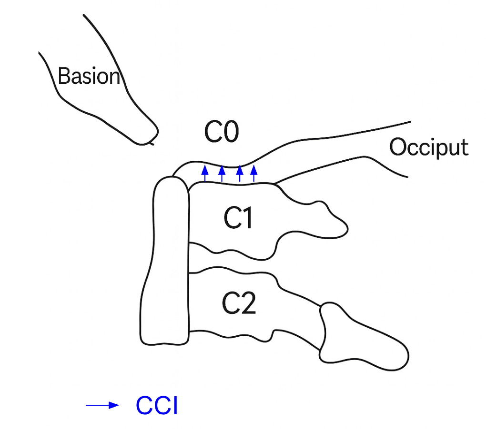

1) Description of Measurement
The Occipital Condyle–C1 Interval (CCI) is a radiographic measure of atlanto-occipital joint stability. It evaluates for symmetry and widening by measuring the distance between the occipital condyles and the superior articular surface of the lateral masses of C1 (atlas) on each side in sagittal and coronal views.
An increased interval reflects disruption of the tectorial membrane, alar ligaments, or joint capsule, consistent with atlanto-occipital dislocation (AOD).
While originally measured on CT, CCI can also be estimated on well-positioned AP open-mouth or lateral cervical X-rays as a screening tool when CT is unavailable.
2) Instructions to Measure
3) Normal vs. Pathologic Ranges
A mean CCI > 1.5 mm or asymmetry > 2 mm strongly correlates with atlanto-occipital dislocation, even in the absence of translation on lateral view.
4) Important References
Pang D, Nemzek WR, Zovickian J. Atlanto-occipital dislocation--part 2: The clinical use of (occipital) condyle-C1 interval, comparison with other diagnostic methods, and the manifestation, management, and outcome of atlanto-occipital dislocation in children. Neurosurgery. 2007 Nov;61(5):995-1015; discussion 1015. doi: 10.1227/01.neu.0000303196.87672.78.
Harris JH Jr, Carson GC, Wagner LK. Radiologic diagnosis of traumatic occipitovertebral dissociation: 1. Normal occipitovertebral relationships on lateral radiographs of supine subjects. AJR Am J Roentgenol. 1994 Apr;162(4):881-6. doi: 10.2214/ajr.162.4.8141012.
Kleweno CP, Zampini JM, White AP, et al. Survival after concurrent traumatic dislocation of the atlanto-occipital and atlanto-axial joints: a case report and review of the literature. Spine (Phila Pa 1976). 2008 Aug 15;33(18):E659-62. doi: 10.1097/BRS.0b013e318182272a.
Smoker WR. Craniovertebral junction: normal anatomy, craniometry, and congenital anomalies. Radiographics. 1994 Mar;14(2):255-77. doi: 10.1148/radiographics.14.2.8190952.
5) Other info....
CCI is one of the most sensitive and specific measurements for diagnosing AOD, particularly in pediatric trauma.
On X-ray, visualization can be limited, CT with coronal reconstruction is the gold standard.
When measured on X-ray, ensure the head is in a neutral position and not rotated or tilted, as asymmetry can mimic abnormal widening.
MRI complements this measurement by showing ligamentous injury or tectorial membrane disruption.
In trauma evaluation, CCI, BDI, BAI, and Power’s ratio should be assessed together for a comprehensive craniocervical junction assessment.
CCI > 4 mm on X-ray warrants immediate cervical immobilization and CT confirmation.